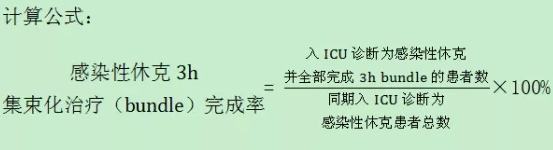

定义：感染性休克3h集束化治疗（bundle），是指感染性休克诊断后3小时内完成：测量乳酸浓度；抗菌药物治疗前进行血培养；予以广谱抗菌药物；低血压或乳酸≥4mmol/L给予30ml/kg晶体液进行目标复苏。感染性休克3h集束化治疗（bundle）完成率，是指入ICU诊断为感染性休克并全部完成3h bundle的患者数占同期入ICU诊断为感染性休克患者总数的比例。不包括住ICU期间后续新发生的感染性休克病例。

意义：反映感染性休克的治疗规范性及诊疗能力。